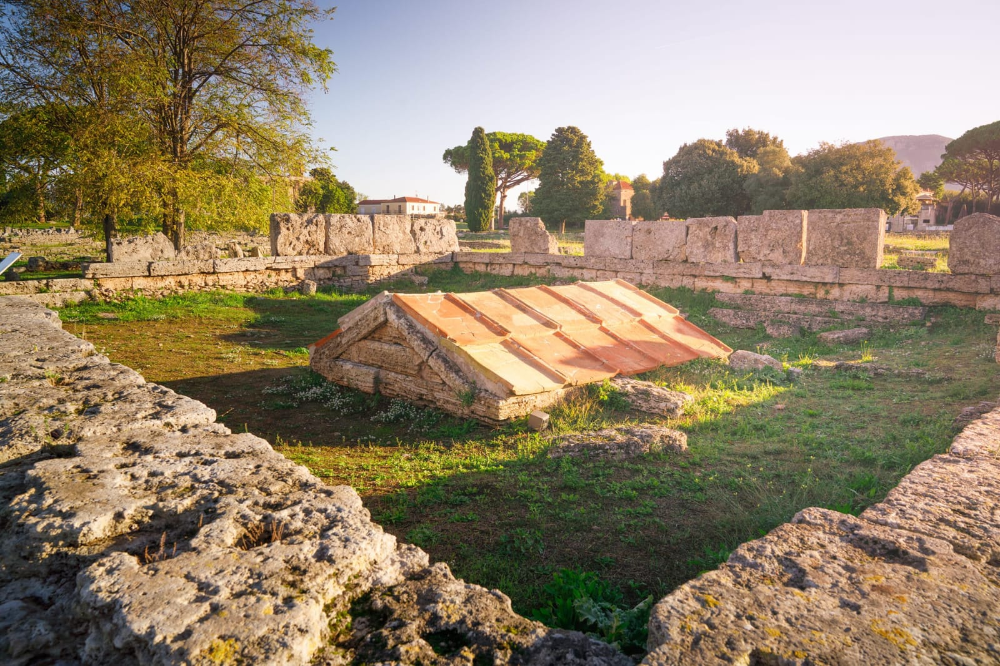
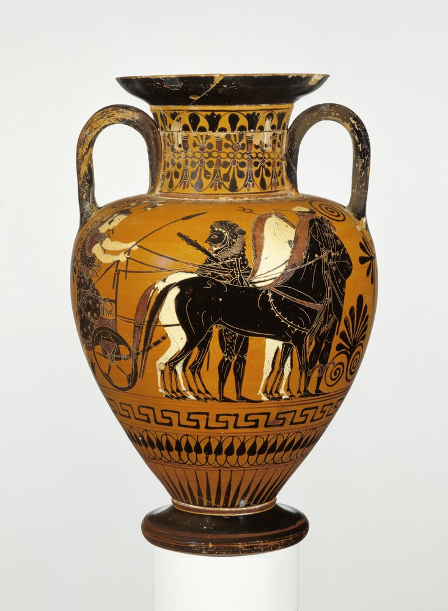
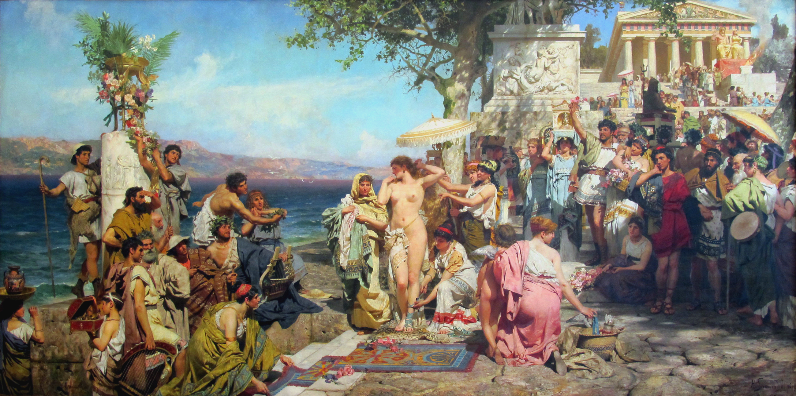

Negli scavi di Paestum non ci sono solo i celebri templi greci: si trovano anche case, anfiteatri, templi romani e altre strutture che offrono importanti informazioni sulla storia della città. Tra queste spicca l’heroon, un cenotafio eretto in onore dell’eroe fondatore di Poseidonia, un Acheo proveniente dalla colonia greca di Sibari, in Calabria, che fondò la città intorno al 600 a.C., dedicata al Dio del mare.
Il monumento, scoperto da Sestieri nel 1954, conteneva al suo interno alcune idrie e un’anfora, tutti vasi di bronzo o terracotta decorati, che conservavano del miele. Oggi questi reperti sono custoditi nel Museo Archeologico di Paestum. L’heroon presenta un doppio tetto: quello originale greco in calcare e un tetto successivo in tegole costruito dai Romani, che scelsero di rispettare il monumento invece di distruggerlo, mostrando la convivenza delle culture greca e romana.

Il sacello, o “sacello ipogeico”, scoperto nel luglio del 1954, era rimasto intatto per circa 2500 anni, sigillato da uno strato di travertino naturale. Durante lo scavo furono rinvenuti numerosi oggetti rituali, tra cui coppe, lekythoi e altri vasi, utilizzati per libagioni e offerte votive. Questi oggetti testimoniano un culto funerario in onore dell’eroe fondatore, probabilmente identificabile con Megyllos o Megyllis, e la pratica di riti legati all’oltretomba.
Il sacello, o “sacello ipogeico”, scoperto nel luglio del 1954, era rimasto intatto per circa 2500 anni, sigillato da uno strato di travertino naturale. Durante lo scavo furono rinvenuti numerosi oggetti rituali, tra cui coppe, lekythoi e altri vasi, utilizzati per libagioni e offerte votive. Questi oggetti testimoniano un culto funerario in onore dell’eroe fondatore, probabilmente identificabile con Megyllos o Megyllis, e la pratica di riti legati all’oltretomba.

Nonostante l’arrivo dei Lucani e la successiva romanizzazione, il culto dell’eroe fondatore sopravvisse e rappresentava un importante simbolo della memoria e dell’identità greca della città. Testimonianze letterarie riferiscono che nel IV secolo a.C. si celebrava ancora una festa durante la quale i discendenti degli abitanti originari di Poseidonia si riunivano per commemorare le origini della città, probabilmente presso il monumento dell’eroe fondatore.